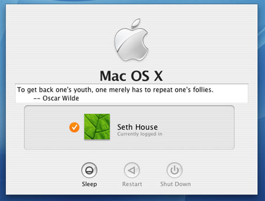

Oscar Wilde is the greatest author of all time. I can prove it.
Besides playwriting, poetry, and the odd novel he is best known for his many quotations. It is said that if you are unsure of the origin of a quote you should attribute it to Wilde as he is the most likely to have coined it.
I looked around for an existing collection of quotes and turned up only disappointment, so I painstakingly (please mail spelling error corrections directly to me!) crafted my own list of 257 favorites, slapped together a Makefile and README, and am now releasing the Oscar Wilde UNIX fortune cookie for your local BSD Games installation.
Posted 3140 days ago on 2004-09-23.